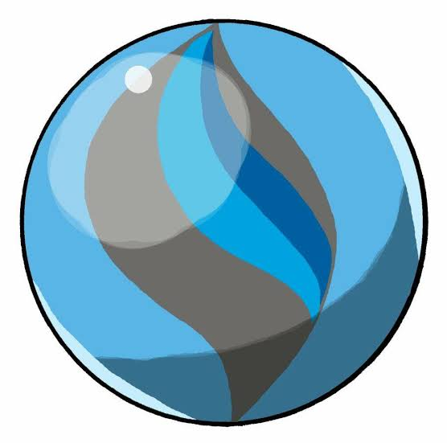
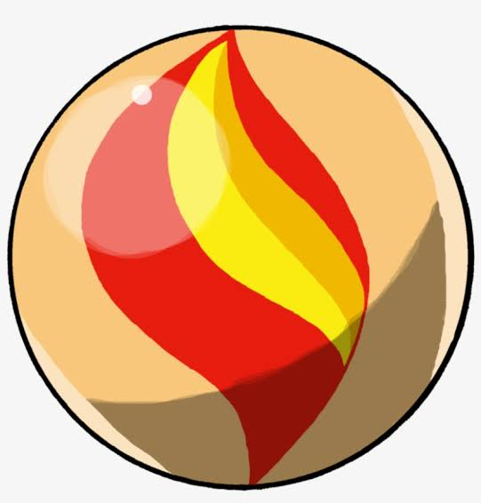

From its release in the first generation to the fifth generation, Charizard failed to make a major impact on the competitive scene, to the point where it "wasn't seen in serious competitive play"[21] and was "doomed ... to be forgotten".[22] This relative lack of viability, combined with its relentless popularity, gave it an unfavorable "reputation of a Pokémon that represents the fanboys".[23] In VGC (Video Game Championship) the official competitive format for Pokémon is a doubles format that started in Generation IV, and Charizard did not start to have much presence until it gained its Mega Charizard Y form in 2014 and 2015 where its ability Drought set up sun which could support its team members by activating abilities like Solar Power and Chlorophyll and halving damage from water attacks whilst also boosting its already powerful Fire-Type moves, while also allowing it to use the move Solar Beam in one turn, when it normally took two, it could also help its team even more with Tailwind. However, in 2016 it fell from usage as Primal Groudon outclassed it as a sun setter and fire type. In 2017 mega evolutions weren't allowed and in 2018 it again had lots of usage until Primal Groudon outclassed it again in 2019. In 2020 mega evolution was not present in the newest games, Pokémon Sword and Shield, and so far it has been phenomenal with its incredible Gigantamax form with the move G-max Wildfire which gives it a really strong damaging effect, even winning the Dallas Regionals. It got even better with its hidden ability being allowed with its Gigantamax form making it do 50% more damage when sun is up which is easier with Torkoal to make Charizard do more damage. Mega Charizard X hasn't been nearly as good in VGC over the years with its ability being less useful and being weak to the common ability Intimidate however it has still seen some success with people like Jamie Boyt winning a regional with this. In singles, it periodically found niches, such as with the boosting move Belly Drum,[22] but it was crippled by the fourth generation's entry hazard Stealth Rock, which removed half of its health upon entering the battle while active.[22][23] The sixth generation rescued Charizard's competitive status by introducing its Mega Charizard X and Mega Charizard Y forms, transforming it into a "top-level threat" of Smogon's standard tier. [23] With the release of Generation VIII and Pokemon Sword and Shield in 2019, Charizard gained more popularity with the new item "Heavy-Duty Boots", which negated the effects of Stealth Rock, it's previously mentioned major issue.

CHARIZAD
Charizard made its video game debut in 1996 with the Japanese release of Pokémon Red and Blue.[25][26] It is available only through Pokémon
evolution from the starter Pokémon Charmander.[27] In Pokémon Gold, Silver, and Crystal, and their remakes Pokémon HeartGold and SoulSilver,
Charizard is used by Red, who acts as the games' final boss.[28] Charizard is one of several Pokémon in Pokémon X and Y that is able to use the
new Mega Evolution mechanic, becoming either Mega Charizard X or Mega Charizard Y.[29] It was given a Mega Evolution about one and a half years
into the development of Pokémon X and Y. Charmander (along with Bulbasaur and Squirtle) was added to the game in a significant role in order to
allow players to experience Charizard's Mega Evolution.[30] It is also able to have a new form Pokémon Sword and Shield called a Gigantamax form.
Champion Leon has it as his main Pokémon in these games as well.
Charizard has made appearances in many other Pokémon games. It appears in Pokémon Mystery Dungeon: Blue Rescue Team and Red Rescue Team on a team with an
Alakazam and Tyranitar, who play a significant role in the story.[31] In Pokémon Ranger, Charizard is a boss Pokémon who becomes attached to the
player's character and assists him or her throughout the game.[32] Charizard returns in Pokémon Ranger: Guardian Signs as another boss character,
and Pokémon Rumble.[33] It is also one of the photographable Pokémon in Pokémon Snap, as well as a non-playable character in PokéPark Wii: Pikachu's
Adventure and its sequel, PokéPark 2: Wonders Beyond.
Charizard has appeared many times throughout the Super Smash Bros. series. Charizard first appears as a non-playable character in Super Smash Bros. and Super Smash Bros. Melee,
as one of the Pokémon which can appear if a player throws a Poké Ball. In Super Smash Bros. Brawl, Charizard is playable while under the command of
the Pokémon Trainer.[34] The Trainer has a Squirtle and an Ivysaur, all three of which can be switched between; unlike the other fighters, these Pokémon
become fatigued and consequently weaker, and must be switched out long enough in order to recover. Charizard's moves include Rock Smash, Flamethrower,
and Fly.[34] Charizard is playable as a standalone character in Super Smash Bros. for Nintendo 3DS and Wii U, where it gains the move Flare Blitz and
its new Final Smash is transforming into Mega Charizard X.[35] Charizard returns in Super Smash Bros. Ultimate, where it is once again under the command
of the Pokémon Trainer alongside Squirtle and Ivysaur.[36] Charizard also appears as a playable fighter in Pokkén Tournament[37] and Pokémon Unite.

There are two types depending on the stones assign
1.X-Stone
if you want to turn your charizad into X type then click the X stone!!!
2.Y-Stone
if you want to turn your charizad into Y type then click the Y stone!!!
> Charmeleon, like its other evolutionary forms, can naturally breathe fire. Its powers, though, are much greater than Charmander's, but not as great as Charizard's. Charmeleon is also much more aggressive than Charmander. It is believed to have a vicious nature and will constantly seek out opponents. Strong opponents excite this Pokémon, causing it to spout bluish-white flames that torch its surroundings. It is a very ruthless, pitiless and zealous fighter often using its claws. However, it will relax once it has won.In their fervor, their tails often begin to burn a bluish-white; at night, they can light up mountainsides like stars if groups of them are present. Enraged Charmeleon often take out their anger on their surroundings, incinerating anything flammable around them with unrestrained Flamethrowers. This stage is often likened to a human’s teenage years--moody and reckless. For starting trainers, reining in disobedient Charmeleon can be extremely challenging, as well as potentially dangerous if not handled well. However, with proper care and treatment, a trainer can earn a Charmeleon’s respect, and eventually its obedience as well.